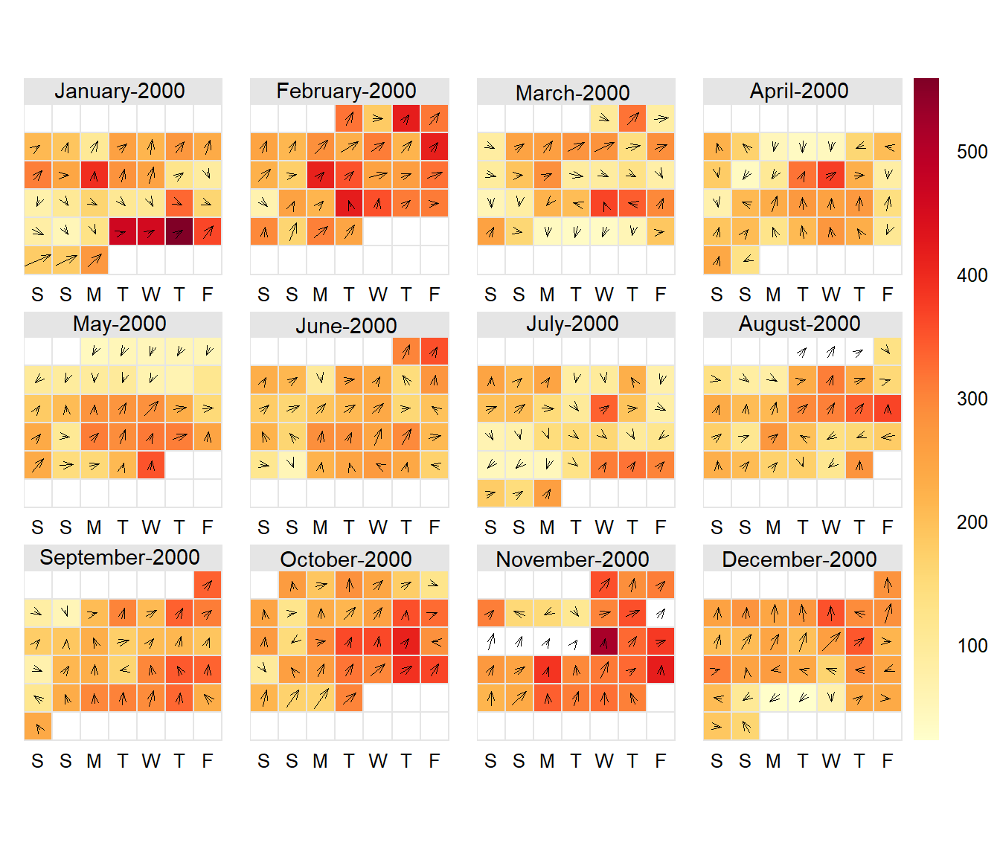
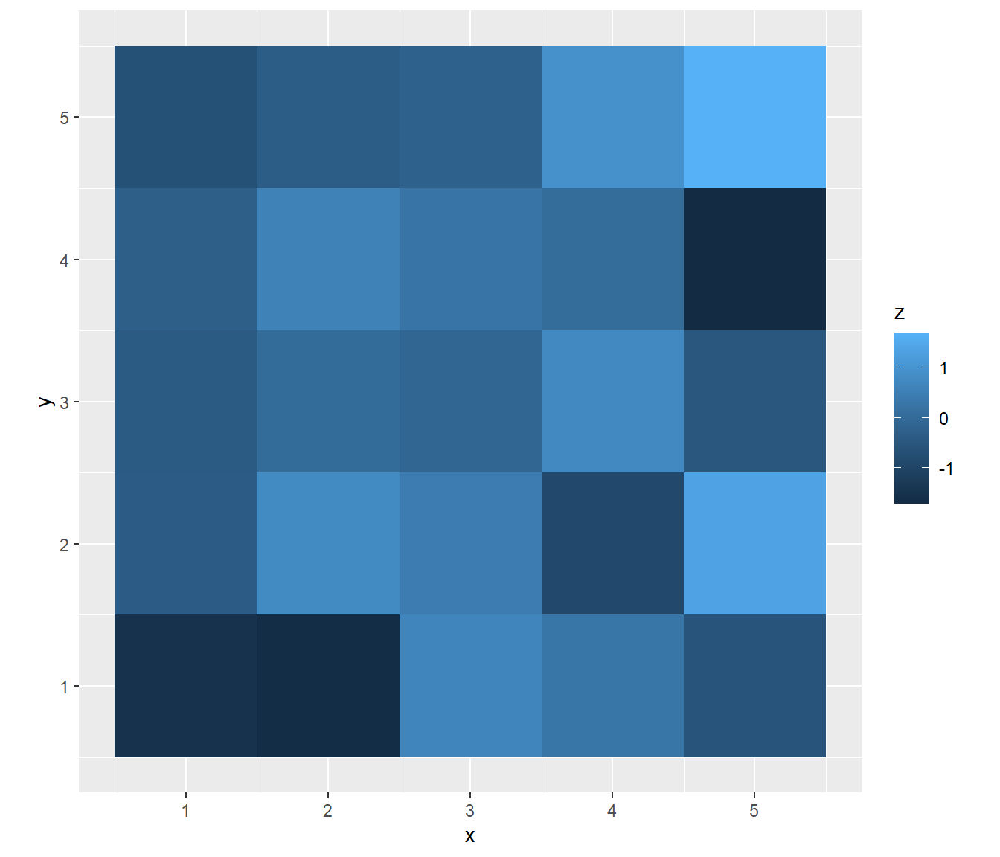
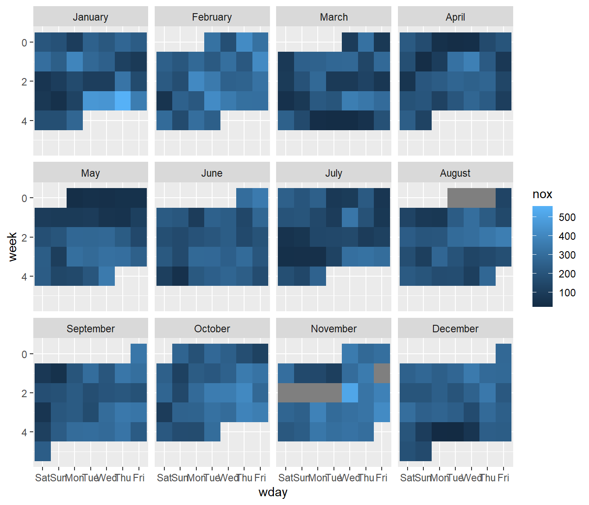
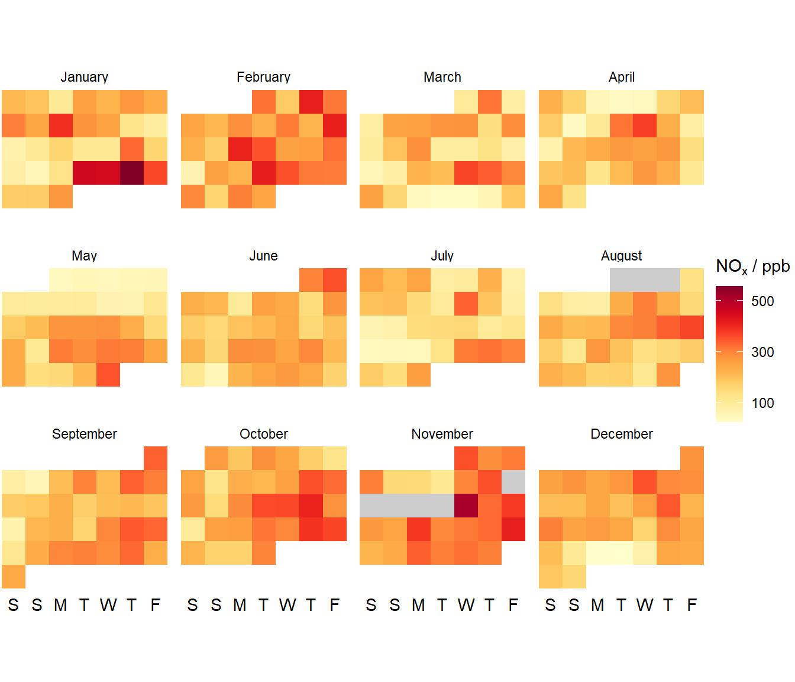
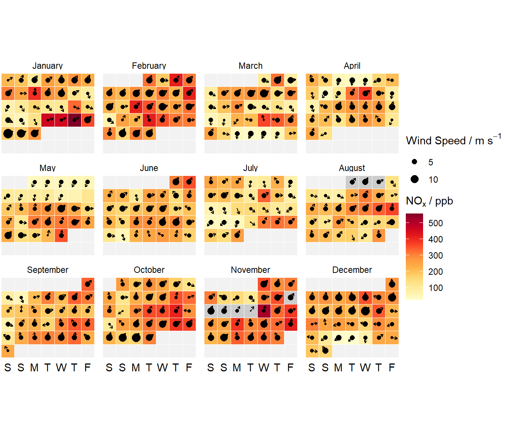
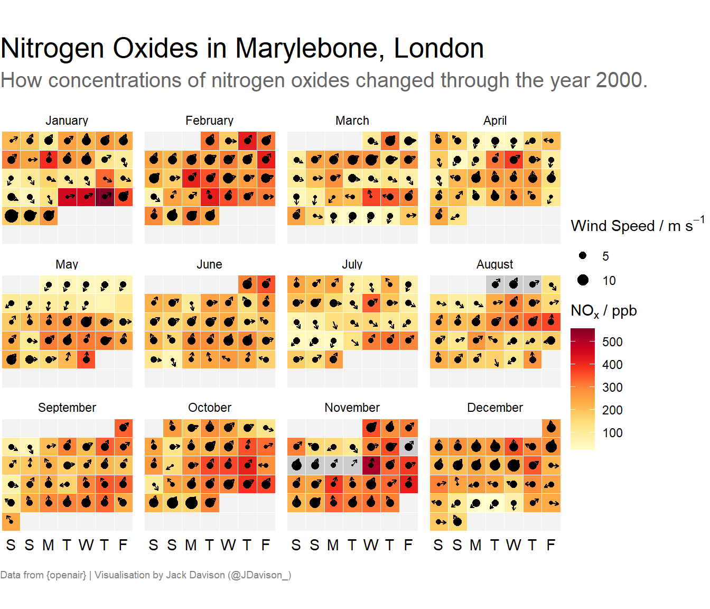

A ggplot2 recreation of an uncommon heat-map visualisation.
If you’re less interested in the journey and just want the finished code, you can find it here.
library(tidyverse)
library(lubridate)
cal_df = openair::mydata %>%
mutate(day = day(date),
wday = wday(date, label = T),
week = week(date),
month = month(date, label = T, abbr = F),
year = year(date),
wday = factor(wday, c("Sat", "Sun", "Mon", "Tue", "Wed", "Thu", "Fri"))) %>%
group_by(month, year) %>%
mutate(week = week - min(week),
wu = ws * sin(2 * pi * wd/360),
wv = ws * cos(2 * pi * wd/360)) %>%
group_by(day, wday, week, month, year) %>%
summarise(across(where(is.numeric), mean, na.rm = T)) %>%
mutate(wd = (atan2(wu, wv) * 360/2/pi) + 180, .keep = "unused") %>%
ungroup()
dummy = crossing(wday = unique(cal_df$wday),
week = unique(cal_df$week),
month = unique(cal_df$month))
cal_df %>%
filter(year == 2000) %>%
ggplot(aes(x = wday, y = week)) +
geom_tile(data = dummy, fill = "grey95", color = "white") +
geom_tile(aes(fill = nox), color = "white") +
geom_spoke(aes(angle = ((-wd+90)/360)*2*pi), radius = .4, arrow = arrow(length = unit(.1,"cm"))) +
geom_point(aes(size = ws)) +
facet_wrap(~month) +
theme_void() +
theme(axis.text.x = element_text(),
plot.title.position = "plot",
plot.caption.position = "plot",
plot.title = element_text(size = 20),
plot.subtitle = element_text(size = 15, color = "grey40"),
plot.caption = element_text(size = 7, color = "grey50", hjust = 0)) +
labs(fill = openair::quickText("NOx / ppb"),
size = openair::quickText("Wind Speed / m/s"),
title = "Nitrogen Oxides in Marylebone, London",
subtitle = "How concentrations of nitrogen oxides changed through the year 2000.\n",
caption = "\nData from {openair} | Visualisation by Jack Davison (@JDavison_)") +
scale_y_reverse() +
scale_x_discrete(labels = c("S","S","M","T","W","T","F")) +
scale_fill_gradientn(colors = openair::openColours(scheme = "heat"),
na.value = "grey80") +
scale_size(range = c(0,4)) +
coord_equal()
Calendar plots are a relatively uncommon “heat-map” style visualisation, the key benefit of which is that they are an extremely readable and familiar format, even for folks less familiar with more esoteric chart types. After all, even your nan has a calendar up in her kitchen! As an air quality scientist I am most familiar with them from the openair package, which helpfully includes a dummy data-set named mydata and a purpose-built calendarPlot() function.
Let’s first consider the data set, which is defined in the openair documentation as follows:
The mydata dataset is provided as an example dataset as part of the openair package. The dataset contains hourly measurements of air pollutant concentrations, wind speed and wind direction collected at the Marylebone (London) air quality monitoring supersite between 1st January 1998 and 23rd June 2005. The data set is a tibble.
It contains a date column which contains hourly date-times starting in January 1998, and a series of numeric columns. ws and wd refer to the wind speed and wind direction, and the columns nox through pm25 correspond to concentrations of the named pollutant.
Rows: 65,533
Columns: 10
$ date <dttm> 1998-01-01 00:00:00, 1998-01-01 01:00:00, 1998-01-0...
$ ws <dbl> 0.60, 2.16, 2.76, 2.16, 2.40, 3.00, 3.00, 3.00, 3.36...
$ wd <int> 280, 230, 190, 170, 180, 190, 140, 170, 170, 170, 18...
$ nox <int> 285, NA, NA, 493, 468, 264, 171, 195, 137, 113, 100,...
$ no2 <int> 39, NA, NA, 52, 78, 42, 38, 51, 42, 39, 34, 38, 41, ...
$ o3 <int> 1, NA, 3, 3, 2, 0, 0, 0, 1, 2, 7, 8, 9, 8, 9, 9, 12,...
$ pm10 <int> 29, 37, 34, 35, 34, 16, 11, 12, 12, 12, 10, 11, 13, ...
$ so2 <dbl> 4.7225, NA, 6.8300, 7.6625, 8.0700, 5.5050, 4.2300, ...
$ co <dbl> 3.3725, NA, 9.6025, 10.2175, 8.9125, 3.0525, 2.2650,...
$ pm25 <int> NA, NA, NA, NA, NA, NA, NA, NA, NA, NA, NA, NA, NA, ...To keep things simple, let’s consider only the NOx data from the year 2000. In openair, the calendar plot will look like this. The colour of the boxes reflect NOx concentration in ppb, the direction of the arrows reflect wind direction, and the relative size of the arrows correspond to wind speed.
openair::mydata %>%
filter(lubridate::year(date) == 2000) %>%
openair::calendarPlot(mydata = ., annotate = "ws")

openair’s plotting functions were written in lattice before ggplot2 came on the scene. This is directly referenced in the preface of the openair book:
openair is a product of the time it was started and used the highly capable lattice package for plotting. This was a time before ggplot2 and the ‘tidyverse’.
A “DIY” version of the calendar plot will allow for a greater amount of customisation. ggplot2 is also now much more widely used than lattice, so using the former package will hopefully be more comfortable for a greater number of people.
I first realised it was possible to produce calendar plots using ggplot2 after reading Roy Francis’ blog post on the subject, but I intend to take the general outline further than Roy - who made an availability chart - to create an opeanir-style heatmap calendar.
ggplot2On first glance it could be difficult to consider how to translate a calendar layout to a ggplot2 style, but looking to the lattice/openair plot we can translate its layout to ggplot2-style language.
Each month is a facet
The day of the week (Mon, Tue, Wed, etc.) is the x-axis.
The week of the month (i.e. “Week 1-4”) is the y-axis.
Each day of the year will be a distinct observation, plotted using a geometry function.
The pollutant concentration (or whatever else will be heat-mapped) is a fill aesthetic.
To put pen to paper in ggplot2 one needs to use geom_*() functions. We want to plot a square, which can be achieved by the (in my experience) rarely-used geom_tile(). A simple reproducible example of a “tile-plot” is shown below.
crossing(x = 1:5, y = 1:5) %>%
mutate(z = rnorm(n = 25)) %>%
ggplot(aes(x,y, fill = z)) +
geom_tile() +
coord_equal()

We need to restructure our data for a calendar plot. An obvious first step can be the extraction of various elements of the date column, which we can achieve using the lubridate package. It has an excellent set of functions that can easily rip apart date-times and label if needed using the label argument.
There are two further mutations needed here that purely serve to improve the aesthetics of the plot.
wday is turned into a factor starting on Saturday, much like the openair calendar.
week currently corresponds to the week of the year and not the week of the month, so we convert one to the other using an intermediary group_by().
The final step is to generate a daily average, as our data’s time resolution is simply too high for a calendar. This is a straightforward group_by()-summarise() step. Here I use a dplyr v1.0.0 feature, across(), to calculate averages for all numeric values (i.e. all of our pollutants and wind speed). This means we can re-use this same data frame for multiple calendar plots if we so wish!
Let’s have a look at our data frame now:
glimpse(cal_df)
Rows: 2,731
Columns: 14
$ day <int> 1, 1, 1, 1, 1, 1, 1, 1, 1, 1, 1, 1, 1, 1, 1, 1, 1, ...
$ wday <ord> Sat, Sat, Sat, Sat, Sat, Sat, Sat, Sat, Sat, Sat, S...
$ week <dbl> 0, 0, 0, 0, 0, 0, 0, 0, 0, 0, 0, 0, 0, 0, 0, 0, 0, ...
$ month <ord> January, January, February, March, April, May, May,...
$ year <dbl> 2000, 2005, 2003, 2003, 2000, 1999, 2004, 2002, 200...
$ ws <dbl> 2.375000, 6.466667, 3.858333, 4.425000, 3.940000, 2...
$ wd <dbl> 60.5088499, 53.6412623, 64.5840029, 3.5529869, 342....
$ nox <dbl> 210.16667, 112.50000, 204.54167, 208.62500, 224.416...
$ no2 <dbl> 41.45833, 48.08333, 55.75000, 65.37500, 50.70833, 5...
$ o3 <dbl> 1.500000, 6.500000, 3.083333, 3.000000, 4.833333, 8...
$ pm10 <dbl> 30.37500, 20.37500, 31.41667, 36.16667, 34.45833, 4...
$ so2 <dbl> 7.104167, NaN, 4.211806, 4.513889, 3.809722, 5.1099...
$ co <dbl> 2.5078473, 0.7579024, 1.4006945, 1.5520833, 2.64027...
$ pm25 <dbl> 24.80000, 10.45833, 14.62500, 16.79167, 26.00000, 2...The most basic way to plot a calendar and check that the previous steps have worked correctly is shown below:
cal_df %>%
filter(year == 2000) %>%
ggplot(aes(x = wday, y = week)) +
geom_tile(aes(fill = nox)) +
facet_wrap(~month) +
scale_y_reverse()

This is obviously really awful to look at, so over a few iterations we’ll refine it!
The default ggplot2 theme can be rather unappealing, so I will start by amending the theme and labelling of this plot. The steps I take are:
Use theme_void(), then override it’s removal of the x axis text using theme().
Add some labels. In the case of the colourbar I use an openair function to format the subscript in NOx, but this naturally will not always be needed.
Abbreviate the weekday labels using scale_x_discrete().
Provide a coordinate system, coord_equal() to ensure the tiles are square.
Change the colour scheme. Here I’ve ripped the openair “heat” colour scheme, but we could have provided anything.
cal_df %>%
filter(year == 2000) %>%
ggplot(aes(x = wday, y = week)) +
geom_tile(aes(fill = nox)) +
facet_wrap(~month) +
theme_void() +
theme(axis.text.x = element_text()) +
labs(fill = openair::quickText("NOx / ppb")) +
scale_y_reverse() +
scale_x_discrete(labels = c("S","S","M","T","W","T","F")) +
scale_fill_gradientn(colors = openair::openColours(scheme = "heat"),
na.value = "grey80",
breaks = c(100,300,500)) +
coord_equal()

One thing that looks rather weird is the unusual shapes that have emerged from using theme_void(). We can create some dummy data to “fill out” the rest of each facet. To do so, I use purrr’s crossing() function to create a “complete” grid of tiles for each combination of month, week and wday in the cal_df data frame. I then plot this data frame using geom_tile() first to provide a back-drop to our actual calendar plot. I use color = "white" for both geom_tile()s to add some contrast between them.
cal_df %>%
filter(year == 2000) %>%
ggplot(aes(x = wday, y = week)) +
geom_tile(data = dummy, fill = "grey95", color = "white") +
geom_tile(aes(fill = nox), color = "white") +
facet_wrap(~month) +
theme_void() +
theme(axis.text.x = element_text()) +
labs(fill = openair::quickText("NOx / ppb")) +
scale_y_reverse() +
scale_x_discrete(labels = c("S","S","M","T","W","T","F")) +
scale_fill_gradientn(colors = openair::openColours(scheme = "heat"),
na.value = "grey80",
breaks = c(100,300,500)) +
coord_equal()
A clear ommission from the original openair plot is that we have yet to visualise wind speed or direction. Thankfully, ggplot2 provides geom_spoke() - another geometry I do not find myself using particularly often. Because geom_spoke() uses the cos() and sin() functions to calculate angles, our wd column needs a little playing with.
To my knowledge, geom_spoke() also pivots around a centre point and cannot be readily extended backwards like the tail of a weathercock, as is the visualisation of the openair calendar. This means that a potentailly wide range of wind speeds will be represented by a relatively tiny change in the length of the arrow. Instead I choose to use a point, the size of which will be relative to wind speed instead.
cal_df %>%
filter(year == 2000) %>%
ggplot(aes(x = wday, y = week)) +
geom_tile(data = dummy, fill = "grey95", color = "white") +
geom_tile(aes(fill = nox), color = "white") +
geom_spoke(aes(angle = ((-wd+90)/360)*2*pi), radius = .4, arrow = arrow(length = unit(.1,"cm"))) +
geom_point(aes(size = ws)) +
facet_wrap(~month) +
theme_void() +
theme(axis.text.x = element_text()) +
labs(fill = openair::quickText("NOx / ppb"),
size = openair::quickText("Wind Speed / m/s")) +
scale_y_reverse() +
scale_x_discrete(labels = c("S","S","M","T","W","T","F")) +
scale_fill_gradientn(colors = openair::openColours(scheme = "heat"),
na.value = "grey80") +
scale_size(range = c(0,4)) +
coord_equal()

Now it’s “ready to go” I’ll just throw a title on it for some-last minute theme-ing.
cal_df %>%
filter(year == 2000) %>%
ggplot(aes(x = wday, y = week)) +
geom_tile(data = dummy, fill = "grey95", color = "white") +
geom_tile(aes(fill = nox), color = "white") +
geom_spoke(aes(angle = ((-wd+90)/360)*2*pi), radius = .4, arrow = arrow(length = unit(.1,"cm"))) +
geom_point(aes(size = ws)) +
facet_wrap(~month) +
theme_void() +
theme(axis.text.x = element_text(),
plot.title.position = "plot",
plot.caption.position = "plot",
plot.title = element_text(size = 20),
plot.subtitle = element_text(size = 15, color = "grey40"),
plot.caption = element_text(size = 7, color = "grey50", hjust = 0)) +
labs(fill = openair::quickText("NOx / ppb"),
size = openair::quickText("Wind Speed / m/s"),
title = "Nitrogen Oxides in Marylebone, London",
subtitle = "How concentrations of nitrogen oxides changed through the year 2000.\n",
caption = "\nData from {openair} | Visualisation by Jack Davison (@JDavison_)") +
scale_y_reverse() +
scale_x_discrete(labels = c("S","S","M","T","W","T","F")) +
scale_fill_gradientn(colors = openair::openColours(scheme = "heat"),
na.value = "grey80") +
scale_size(range = c(0,4)) +
coord_equal()

Calendar plots are relatively niche and their applications are pretty limited - they can effectively only plot time series data at a daily resolution. At a higher resolution you need to average or sum and lose detail, and at a lower resolution (e.g. weekly, monthly, yearly data) you cannot calendarify the data in the way we have here.
While openair is designed for air quality data, there is no reason to necessarily restrict ourselves to data from just even the wider umbrella of environmental science. For example, in a recent #TidyTuesday challenge about homelessness I noted some rather interesting calendar plots!
There was this plot, similar to what I have laid out here:
Today's #TidyTuesday plot, looking at the occupancy rate of shelters in Toronto in 2019. Coming into the winter months, donations are needed now more than ever.
— Henry Wakefield (@henrywrover2) December 1, 2020
More information here: https://t.co/pJpgVzyaE3 pic.twitter.com/k93B9EsezQ
A “GitHub-style” calendar:
Got back on the #rstats #TidyTuesday train this week looking at Toronto Homeless Shelters. I made a github-style calendar showing the number of programs at or above capacity on each day. I can see some seasonal trend (esp in 2018), but not as much as I was expecting pic.twitter.com/gYnlbLQldy
— Amanda Luby, PhD (@amandaluby) December 2, 2020
And even a “calendar in disguise” which has all the elements of a calendar plot, but uses a different categorical variable (in this case a shelter provider) in place of the day of the year.
Toronto shelters for this week’s #TidyTuesday
— Georgios Karamanis (@geokaramanis) December 2, 2020
code: https://t.co/QK77DGL8g1#dataviz #RStats pic.twitter.com/zhNeuieP5W
So perhaps calendar plots aren’t going to be useful for every project, but they’re a useful one to have in your back pocket!